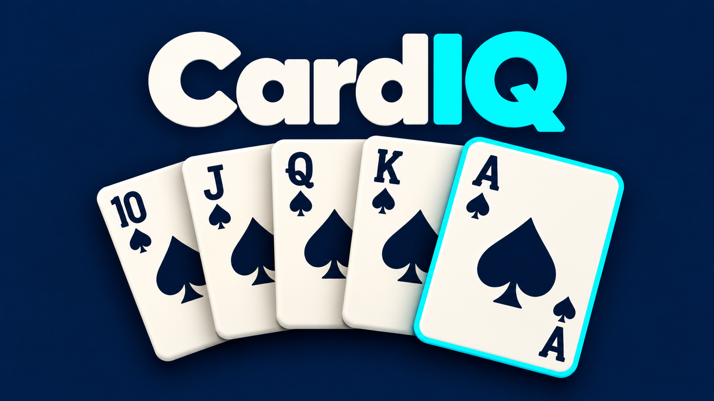

Cards & strategy
CardIQPoker Hand Challenge Against the Dealer
Take on the dealer and improve your poker hand with up to five one-card draws.
Play CardIQ on itch.ioFree to play in your browser.

Watch the CardIQ trailer
About CardIQ
Build a poker hand that beats the dealer. In CardIQ, you can improve your hand with up to five one-card draws. Decide which card to replace as you balance keeping a useful combination against the chance of making a stronger hand.
How to play
- Compare your five-card poker hand with the dealer’s hand.
- Choose a card to replace when you need to improve your hand.
- Try to beat the dealer within five draws and follow your wins and losses across the game.